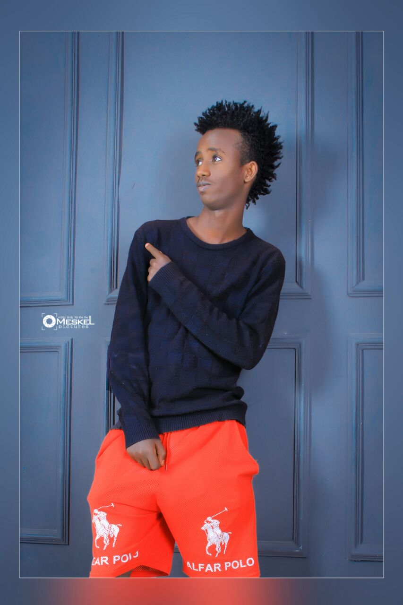

This website is designed by using the knowladge i aquired from the programming lesson regdarding the use of html and css effectively.
In this website there is many information about me (JohnLegesse) regdarding my educational life.Well, I’m here to tell you that even a
little knowledge of HTML and CSS can make a big difference in your career. And learning tech isn’t just for the production assistants
and print designers of the world—whether you’re a small business owner, a sales manager, an event coordinator, or even a magician,
you can benefit from some HTML and CSS chops.
But, first, let’s review what exactly HTML and CSS are. The short and sweet
version is: HTML and CSS are the foundations of the web. HTML—“Hyper Text Markup Language”—is the language used to tell
your web browser what each part of a website is. So, using HTML, you can define headers, paragraphs, links, images, and more, so
your browser knows how to structure the web page you’re looking at.
CSS—“Cascading Style Sheets”—is the language that gives
those web pages their look and formatting. In other words, CSS is what you use to make sites look nice with fancy fonts, rich
colors, gorgeous backgrounds, and even slick animations and 3D effects.
Easy, right? But you’re probably still wondering:
How am I supposed to use these coding languages in my student career? Well, here are just a few of the amazing things you
can achieve with just a few lines of these easy-to-learn languages. This all reasons are make me design this simple website.

Hey, this is my homepage, so I have to say something about myself. Sometimes it is hard to introduce yourself because you know yourself so well that you do not know where to start with. Let me give a try to see what kind of image you have about me through my self-description. I hope that my impression about myself and your impression about me are not so different. Here it goes.My name is John Legesse, and my nick name is kiya. I came from a very big family, which includes seven people. I am now studying in addis ababa university. My habits are play football and table pool.
I am from a very big family; it includes my father, my mother, my three sisters, my brother and me. Most of the families have only two to three kids, but mine has five kids. The reason for that is my grandmother liked boys more than girls, and the first kid was a girl which is my sister, second one is me, then the third one is a girl again, so my grandmother was not very satisfied with only one boy, then my parents decided to try one more time, and that was a big surprise because it was a boy and a girl at the same time.
I am now one of the students in addis ababa university. two years ago. I moved from modjo to Adama for the secondary education. My grades in modjo were not very good, and my plan was to choose one of the easiest high schools, but my father suddenly told me that he wanted me to study harder and he was working in government office, so he decided to move me to Adama city without asking me. So, I have been studying in Adama for more than four years.
I like to play football very much. I used to be the football team member for the passed four years in adama, my football skills were very bad, and after my coach’s training, I became an okay basketball player. At the beginning of the year, our team was not very good because our team was new and we did not know anything about team work, but we got better and better when the time passed. I learned how to play football and how to play in a team form my four years football training, and all of our team members were having fun during all the practices and games.
Finally, I am not a student who loves to study or like to study at all. Some of my friends think that I like to study because my grades are As and Bs, but in fact I do not like to study at all. Everything I do now is for my future I know that I need good grades.
Each one of us has goals in life and it would differ from person to person. Having a goal in life is very good as it would help
you to stay focused and make you reach where you have been dreaming to
be atI too have a goal in life. I would like to become an architect, When I graduate high school, I plan
on having future goals that I plan on achieving. My first goal is to go to college and get a degree.
plan on attending Purdue NorthWest majoring in engineering and minoring in business. This is my number
one future goal that I need to accomplish because to be able to have a nice life, I need to go to college
to support my future family. My next future goal would be get a starting job to be able to support
my future family. With the internship that I would get at Purdue NorthWest, they would be able
to help my find I job that I would like to do. This job would be able to help me get money so that
I can start a family. My final future goal would be to go back to college to get my Masters Degree in
engineering. As technology advances into the future, I would need to go back to college to update myself
with the new technology. After graduating, I could go into a higher engineering field and get more for
my work.
johnlegesse59@gmail.com
+251967815813
telegram(@Botoshu)
facebook(JohnLegesse)